Task 1: Extracting Features
Track 1: Schizophrenic Gods
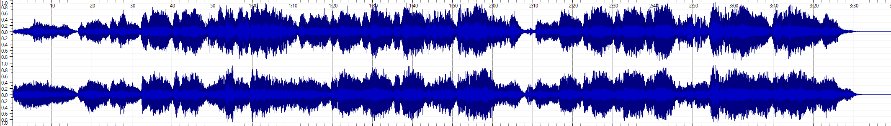 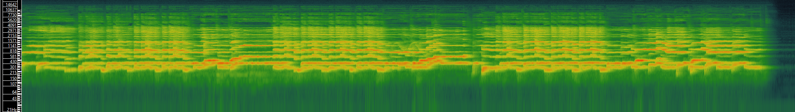 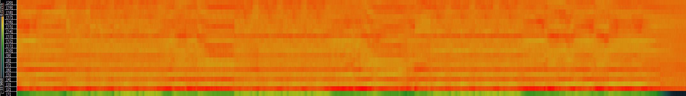 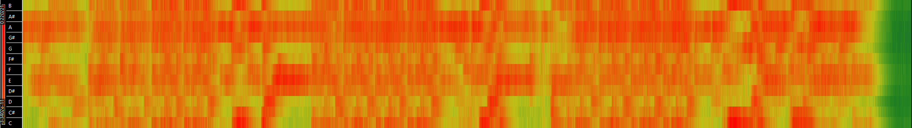Track 2: Dark Horror Nightmare
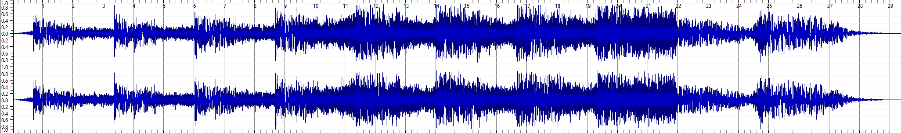 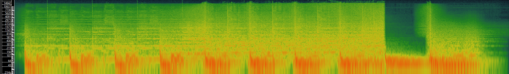 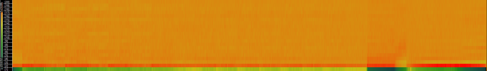 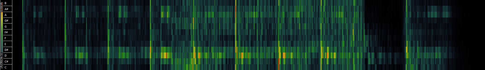Track 3: Your Evil (Dark Cinematic)
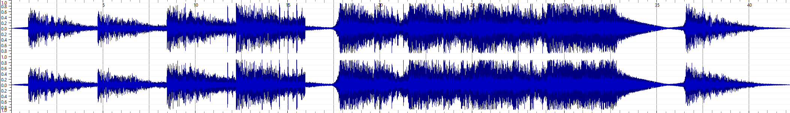 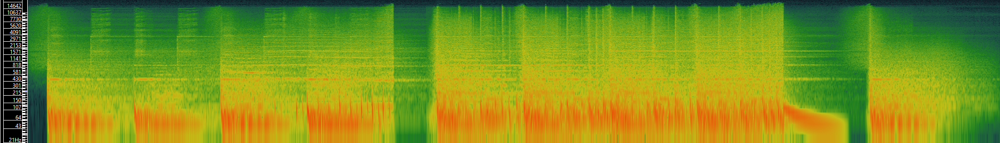 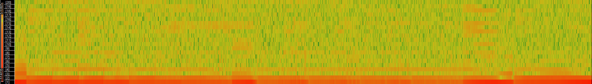 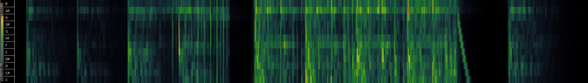Task 2: Computing and Visualising Histograms
Computed Spectrograms to Histograms
Track 1
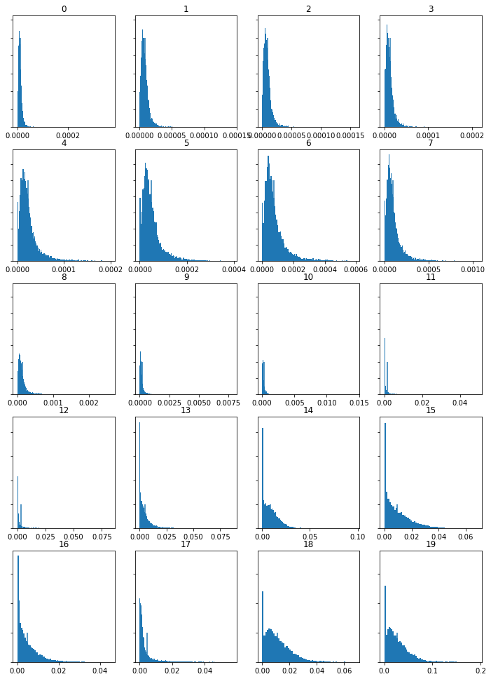Track 2
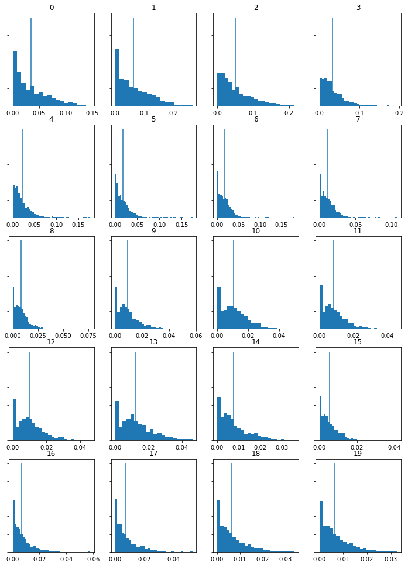Track 3
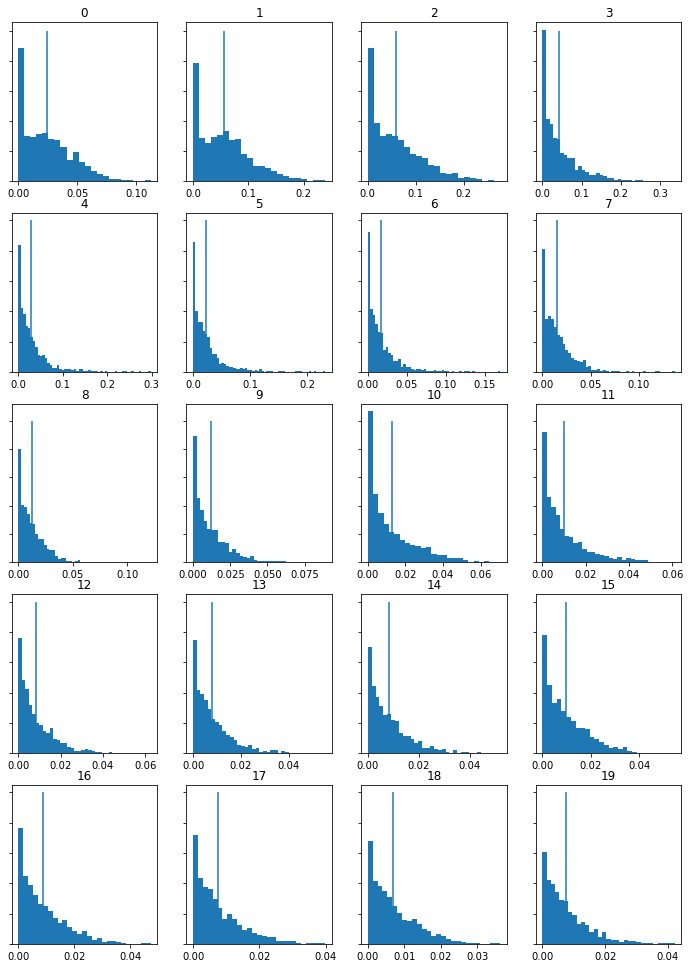Computed MFCCs to Histograms
Track 1
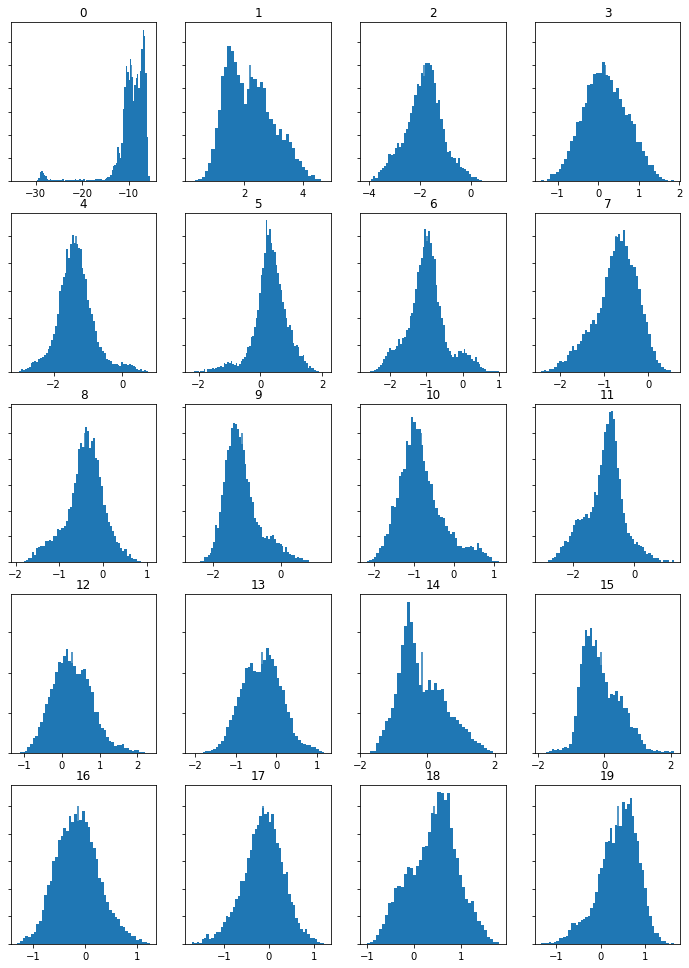Track 2
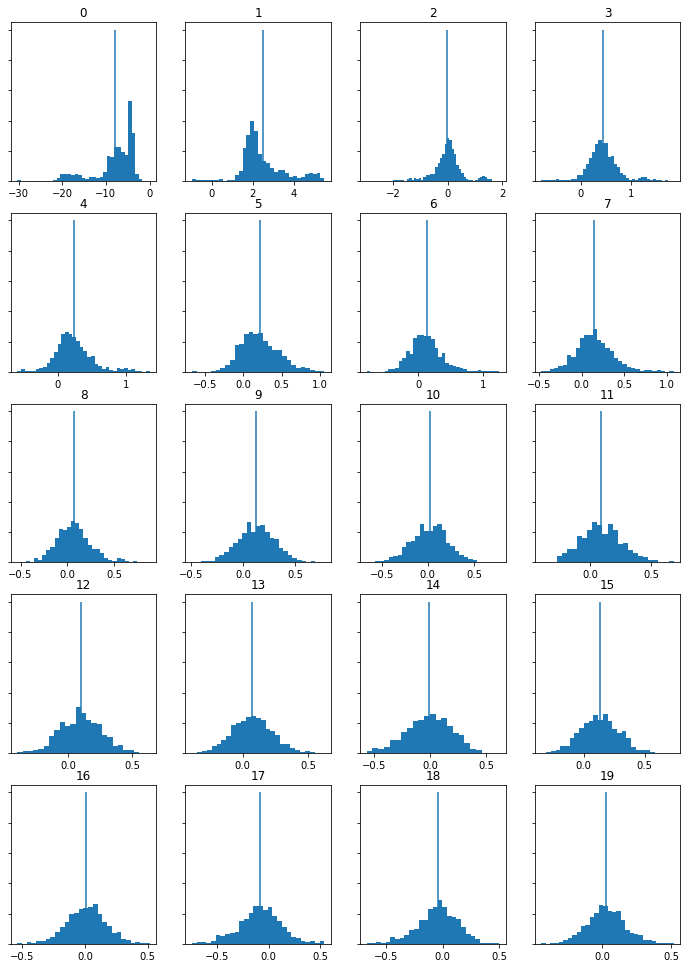Track 3
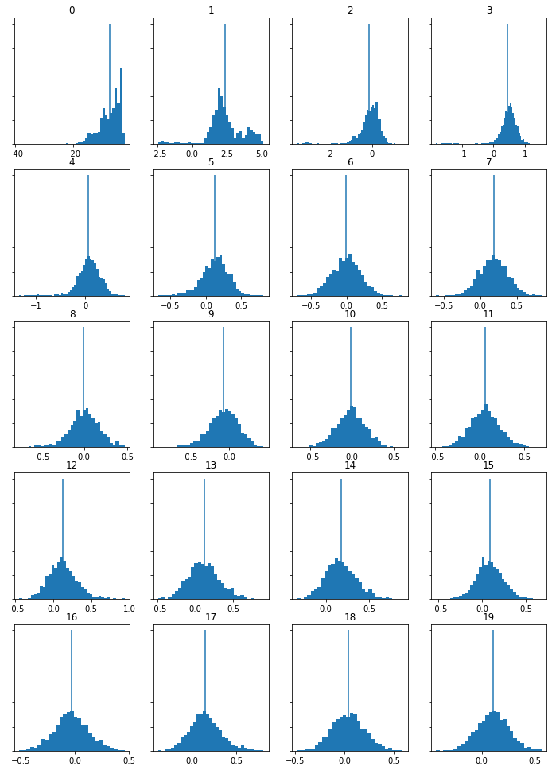Computed Chromagrams to Histograms
Track 1
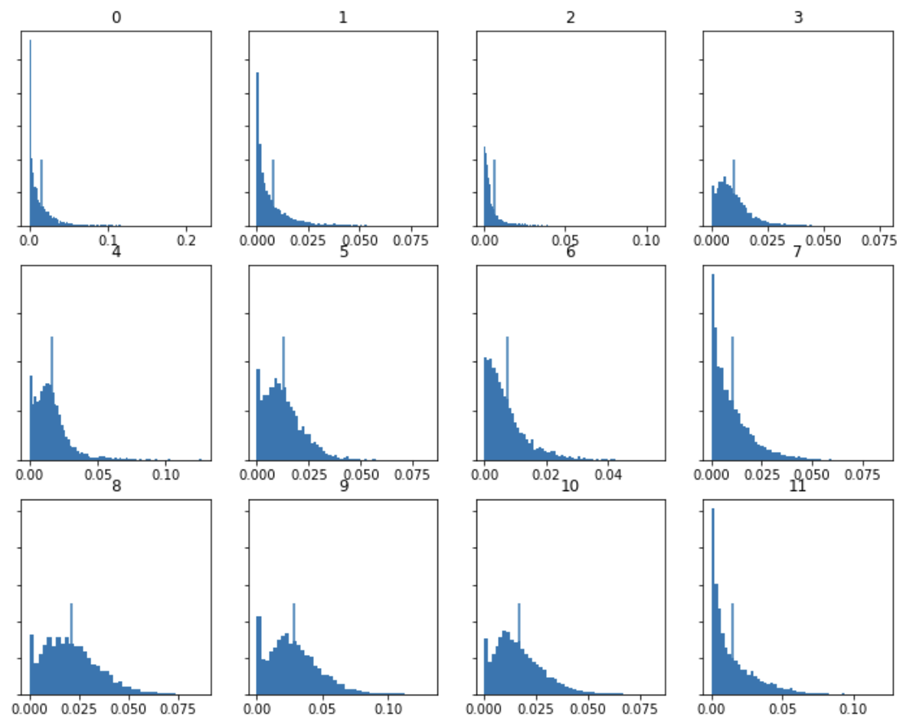Track 2
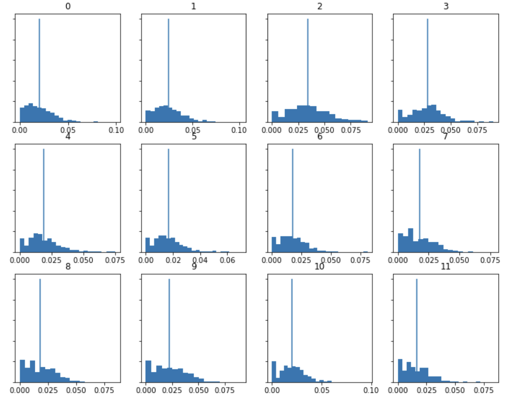Track 3
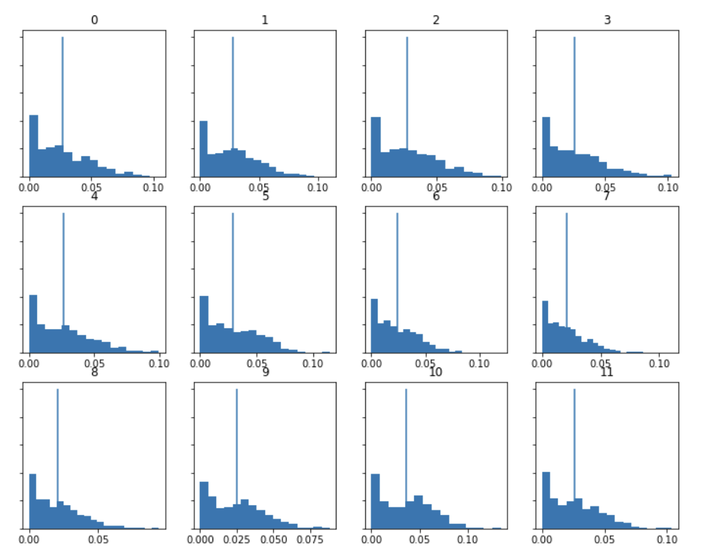Analysis of MFCC Histograms
For my analysis, I have chosen to compare the MFCC histograms of each track. MFCC are used to analyse the timbre of pieces. The timbre is the quality of a music piece and this is different from things such as pitch.While comparing all of the tracks, it is clear that track 1 is significantly different from tracks 2 and 3. This was expected as track 1 is more of a choral piece which doesn't contain any instruments. Wheras tracks 2 and 3 are both cinematic pieces with a lot more synth and bass. Given that tracks 2 and 3 are much more similar in sound, so it makes sense for their histograms to be similar. Track 1 also has a larger scale on its histograms than tracks 2 and 3. It is a longer piece and contains a lot of ranging vocal sounds with echo so this also lines up with the MFCC histograms.